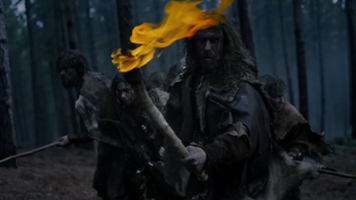

Le contrôle de l'énergie par l'homme : Le feu
Le feu n’a pas seulement bouleversé le cours de notre histoire en
révolutionnant nos outils et technologies, il a modifié la biologie de
l’homme.
I. La domestication du feu
a) L'apparition de la cuisson
La cuisson des
aliments procure plus d’énergie à l’organisme car la
digestion de celle-ci est plus rapide. Grâce à ce meilleur apport nutritif, la
taille de l’intestin c’est réduit tant dis que le cerveau lui à continuer de se
développer permettant l’évolution humaine.
L'homme passe alors moins de temps à macher et peut
donc développer de nouvelles compétences.
Le feu
représente aussi le foyer, c’est-à-dire le lieu où l’on allume le feu. C’est un
endroit où les personnes se réunissent, cuisissent et se réchauffent ensemble. Il est considéré
comme un élément centrale de la vie de l’homme, et aujourd’hui encore.
b)
Une
source de protection contre les aléas naturels
L’existence des
hommes repose sur leurs capacités à apprivoiser la nature et à créer un moyen
de défense.
Face aux aléas
climatiques tels que la pluie, la neige ou le froid les Hommes ont trouvé dans
le feu une source de chaleur suffisante pour se réchauffer.
La lumière
émise par les flammes permet également à l’Homme de s’éclairer. Cet éclairage artificiel
rajouté à la chaleur émise rend possible les déplacements nocturne et la
conquête des zones froides.
En plus de
protéger du froid, le feu joue aussi un rôle de dissuasion et de protection, le
risque de brûlure et les grandes flammes effrayent les animaux sauvages et
permet ainsi de se protéger des attaquent notamment pendant la nuit.

C’est cette
domestication du feu qui a marqué un tournant dans l’évolution du l’homme. La
cuisson à mis en évidence le pouvoir de transformation de la flamme, l’homme a
alors chercher à modifier d’autres ressources naturelles.
II. L'utilisation du feu dans les nouvelles technologies
a) Les premières innovations
Inventée en
Chine, la poudre à canon noire provient d’un mélange de flagrants de soufre, de
salpêtre et de charbon. Cette invention va engendrer un passage de l’arme
blanche à l’arme à feu avec des projectiles capables de traverser les armures
de l’époque.
Aujourd’hui la
poudre à canon noire n’est plus utilisé dans les armes modernes, son usage est limité
aux feux d’artifices car elle possède une faible capacité d’explosivité face aux
explosifs plus modernes.
La 1ère
machine à vapeur est créée par Newcomen, c’était une machine qui convertissait l’énergie
de la vapeur en énergie mécanique avec l’aide de charbon brulés, mais une
grande partie cette chaleur était perdue.
James Watt, un ingénieur écossais, avait
alors cherché à améliorer la machine à vapeur, il créa un condensateur séparé
qui va permettre de générer la même puissance mais avec moins de charbon.
L’essor de la
machine à vapeur va permettre avec le temps l’introduction de la locomotive à
vapeur, des premiers bateaux et premiers véhicules. La vapeur d’eau a joué un
rôle crucial dans l’industrialisation et l’urbanisation.
b) La découverte du métal
C’est lorsque
l’homme à découvert que les roches pouvaient être fondues et moulées par
l’utilisation du feu, que la véritable avancée technologique est apparue.
Les premiers objets en cuivre fondu sont apparu au 7e
millénaire en Asie Mineure, et les Balkans constitue le plus ancien foyer
métallurgique daté vers 3 500 avant J .-C.
C’est le début
d’une nouvelle ère : l
’âge de fer.
Les flammes ont fait surgir de nouveaux
matériaux, plus forts et plus légers. L’alliage du cuivre et de l’étain a donné
le bronze, un matériau plus résistant que tout ce qui été connu jusque-là. Du
cuivre au bronze, en passant du fer à l’acier, le feu à transformé le naturel
en une avancée technologique.
b) Le feu à l'origine de l'éclairage
L’éclairage est
naît avec la découverte du feu, après avoir réussi à le domestiquer l’Homme
peut allumer et déplacer le feu selon ses besoins. La lumière est le résultat
d’une mauvaise combustion, entre un combustible, un comburant comme l’air et un
apport d’énergie.
Au fils des
années et des innovations on constate l’apparition des premières lampes à huile
avec de la graisse animale et végétale, puis la lampe à pétrole, la lampe à gaz
et enfin l’éclairage électrique avec l’ampoule connue de nos jours.
Le feu
représente ainsi le fil conducteur allant du début de l’humanité jusqu’à l’ère
moderne. Pendant des siècles le feu a satisfait nos besoins élémentaires comme
se chauffer, se nourrir ou se protéger.
Puis le feu a été l’élément moteur dans
la révolution industrielle et a ainsi transformer le monde.